MIP-0025: marola-sea-1.0 — a small domain-tuned model (QLoRA SFT + tool-call SFT + DPO) served through Ollama¶
| Status | Partially implemented (tasks 1-5 of 6, docs/MIPs/MIP-0025.tasks.md) — task 1 merged as PR #192; tasks 2-5 (dataset scale, tool-call SFT, DPO data, DPO training) merged as GitHub stack #266 (PRs #211, #210, #209, #228); task 6's tooling merged as PR #206 (publish_hf.py) plus finetune/merge_export.py. What is left is not code: a real peft merge + quantize run and an actual Hugging Face upload, both needing the maintainer's own hardware and HF token (ROADMAP.md §2b) |
| Author | Claude Sonnet 5, for M. Hoffmann (request of 2026-09-06: turn the maintainer's marola-sea-1.0 notes into a MIP) |
| Created | 2026-09-06 |
| Phase | 0 (local training/eval only, no product surface change) — the model would first plug into the local LlmClient path that already exists (Phase-0-and-later work per ARCHITECTURE.md §11), not gated on Phase 1 |
| Related | finetune/README.md, finetune/build_dataset.py, finetune/train_lora.py, finetune/Modelfile/Modelfile.adapter (this exact 3-layer idea is partially built already — see §2), dspy/compile_recommendation_prompt.py (the prompt-only alternative already in production), knowledge/*.md (the corpus layer 1's dataset would draw from), cli/src/main/scala/marola/agent/SwimConditionsMcpServer.scala (the real tool names layer 2 targets — get_swim_recommendation, get_water_quality, find_nearby_beaches, ask_ocean_question), docs/benchmarks/ and just benchmark/scripts/benchmark_gate.py (MIP-0008's existing gate this MIP must clear, not bypass), docs/MIPs/MIP-0008-docker-images-and-smoke-test.md (marola-local image, the existing Tier-1 CI/gate precedent) |
| Effort | M — no new Scala module or trait (the local LlmClient already picks a model by name via MAROLA_LOCAL_LLM_MODEL/Ollama FROM); the work is entirely in finetune/ (already exists) plus a DPO stage and dataset-scale increase it doesn't yet have |
| Gain | user value (better format/tool-call/safety adherence at zero added runtime cost — still local, still free) |
| Effort vs Gain | do when X lands — worth building once finetune/'s Tier 2 (QLoRA, already written but "not run — no GPU here") actually gets a GPU run and a real docs/benchmarks/ comparison; building DPO and scaling the dataset before Tier 2 itself has ever completed once would be building on an unverified foundation |
| Depends on | finetune/'s Tier 2 QLoRA path completing at least one real run — satisfied 2026-09-06, tiny preset (SmolLM2-360M), see finetune/README.md's Tier 2 row for the real command sequence and eval-loss numbers; no Phase 1 gate (this is a local-LLM-quality change, independent of the bot existing); no paid resource required — RunPod is optional, and still needs the human cost go-ahead per AGENTS.md |
| Risk | a 3B model, however tuned, hallucinating a specific number (wave height, temperature) that a user reads as authoritative — Reviewer's hallucination check (core/llm/Reviewer.scala) is the existing mitigation and must stay in the loop, not be assumed redundant because the model was "trained to know better" |
| Cost so far | — (the tiny-preset run above was local CPU time, $0, not yet attributed to a merged PR under this MIP's own task list) |
1. Summary¶
Ship marola-sea-1.0: a 3B base model post-trained in three layers (marine-domain SFT, MCP
tool-call SFT, safety DPO), merged and quantized to GGUF, served through Ollama exactly like
today's marola-llama3.2 (finetune/README.md). This is not a new idea for this repo: finetune/
already has a working Tier 1 (persona-only Modelfile, run and verified) and a written-but-unrun
Tier 2 (real QLoRA). This MIP proposes extending Tier 2 with the two layers it doesn't have yet
(tool-call SFT, safety DPO) and actually running it once, rather than describing it as new work.
2. Motivation¶
The maintainer's brief describes a 3-layer architecture "following the post-training approach used
by the Rio 3.5 Open initiative." Verified 2026-09-06 (WebSearch): Rio 3.5 Open 397B is real,
a Mixture-of-Experts model released by IplanRIO (Rio de Janeiro's municipal IT company),
post-trained from Qwen 3.5 397B, shipped under an MIT licence on Hugging Face
(prefeitura-rio/Rio-3.5-Open-397B). The analogy holds at the level the maintainer meant it
(layering domain post-training onto an existing open base rather than pretraining from scratch);
marola's own finetune/README.md already states nearly the same rationale for its Tier 1/2 split.
The real gap Rio 3.5 Open highlights by contrast: marola's own effort is 3B, not 397B, and stops at
SFT, no DPO stage, no tool-call layer, and (per finetune/README.md's own honest status line) not
yet run on a GPU. This MIP is about closing that gap on marola's existing recipe, not importing a
new one.
3. User-visible change¶
Before (today, per ARCHITECTURE.md §5a and finetune/README.md): --summarize uses either the
raw llama3.2 or the Tier-1 persona variant marola-llama3.2 (system prompt only, no weight
change): real, run, but a documented failure mode remains: a small quantized model has mentioned
a whale despite whaleSightingLikelihood=Low, against the compiled prompt's own instruction.
After (MAROLA_LOCAL_LLM_MODEL=marola-sea-1.0, same env-var mechanism, no code change on the Scala
side): the same CLI flag, ideally with fewer instruction-following misses on the jellyfish/whale
mention policy (measured, not assumed; see §7) and, new capability, correct MCP tool-call emission
when a question needs live data instead of hand-written prompt engineering to coax it.
4. Data sources and dependencies reviewed¶
4.1 What already exists in finetune/ — read in full before building anything new¶
build_dataset.py: builds chat-format JSONL fromcore/src/main/resources/{recommendation_ prompt,review_prompt,sea_lore}.jsonplus one Q/A perknowledge/*.mdchunk. "Expect a few dozen examples," an order of magnitude below the maintainer's "5,000–10,000 SFT pairs" target. Scaling this up (synthetic pair generation, per §4.3) is new work this MIP proposes, not already done.train_lora.py: a three-preset ladder (tiny=SmolLM2-360M,small=Llama-3.2-1B,base= Llama-3.2-3B), QLoRA via peft/trl, written against documented APIs, not run (no GPU, gated weights need a HF login). This MIP's base-model choice (§4.2) plugs into this same script.Modelfile/Modelfile.adapter: Tier 1 run and verified; Tier 2's adapter Modelfile written, waiting on an actualout/marola-adapter.ggufthat doesn't exist yet.
4.2 Base model licence — verified 2026-09-06 (WebSearch, not a direct HF/Meta page fetch)¶
- Llama 3.2 Community License: commercial and research use permitted; the one hard gate is a
700-million-monthly-active-users threshold requiring a separate licence from Meta, irrelevant at
marola's scale. Requires an attribution notice in redistributed copies and compliance with Meta's
Acceptable Use Policy.
train_lora.py'sbasepreset already targetsmeta-llama/Llama-3.2-3B- Instruct, gated behind a Hugging Face login (perfinetune/README.md, already known). - Qwen2.5-3B licence: not the permissive Apache-2.0 the maintainer's material assumed.
Search results indicate Qwen2.5's 3B (and 72B) variants ship under Alibaba's own "Qwen license"
(sometimes called "Qwen-Research" for research-labelled variants), while most other Qwen2.5
sizes (0.5B/1.5B/7B/14B/32B) are Apache-2.0. This is a genuine correction to the maintainer's
brief and was not verified against Qwen's own licence file for the 3B model directly in this
session. Flagged as needing a direct check of
huggingface.co/Qwen/Qwen2.5-3B-Instruct/blob/ main/LICENSEbefore picking Qwen over Llama, not assumed either way. - Pick, provisionally: stay with Llama-3.2-3B-Instruct, since that's what
train_lora.py'sbasepreset already targets and its licence terms were more directly confirmed this session. Revisit only if the Qwen licence check above comes back genuinely Apache-2.0 for the 3B variant.
4.3 Dataset scale-up — synthetic pairs, not verified against a live generation run¶
The maintainer's 5,000–10,000-pair target needs synthetic generation from knowledge/*.md and
board JSON, filtered by the existing Reviewer LLM pass (core/llm/Reviewer.scala) acting as a
quality gate; reusing that component instead of building a new filter is the natural fit, since
it already grades hallucination and jellyfish/whale-mention adherence on exactly this kind of
output. Not run or estimated for real cost in this session. The maintainer's $2–5 figure for
"Gemini API or local" generation was not independently checked (no live generation was attempted).
4.4 Training compute — Unsloth / RunPod, verified 2026-09-06 (WebSearch)¶
- Unsloth: supports Llama 3/3.1/3.2, Qwen 2.5/3, Mistral, Gemma 2, DeepSeek, Phi-3/4 and more.
Official 4-bit QLoRA VRAM figures: 3B needs ~3.5GB, meaning a 3B QLoRA fine-tune fits an 8GB
consumer GPU (RTX 3060/4070, matching
finetune/README.md's own claim) with room for batch size and context.finetune/train_lora.pyuses plain peft/trl, not Unsloth itself. Switching to Unsloth (2x speed / 70% less memory per its own marketing, not independently benchmarked here) is an option this MIP could adopt but doesn't require; the existing script already targets a consumer-GPU-feasible base. - RunPod A100 price: ~$1.19/hr (Community Cloud, single A100) up to $1.39–$1.59/hr (Secure Cloud, PCIe/SXM) as of the August–September 2026 sources found. The maintainer's "1×A100 ~8h" budget line: 8h × ~$1.19–$1.59/hr ≈ $9.50–$12.70 for compute alone, inside the maintainer's $10–15 SFT+DPO estimate, though DPO on top of SFT plausibly needs more than 8h total once both stages and the dataset generation step are counted; the maintainer's $10–20 total figure is plausible but not verified against an actual completed run. No training was executed.
4.5 Ollama Modelfile / GGUF adapter path — verified 2026-09-06 (WebSearch), matches¶
finetune/README.md's own documented steps exactly: ADAPTER in a Modelfile takes a GGUF adapter
converted from Safetensors via llama.cpp's convert_lora_to_gguf.py; currently-supported base
families for adapters are Llama (2/3/3.1), Mistral, and Gemma (1/2). Llama 3.2 itself was not
explicitly named in the one source checked, a gap worth confirming directly against Ollama's own
docs (docs.ollama.com/import) before assuming Llama-3.2-3B adapters attach cleanly; the base and
adapter must come from the same family or "behaviour will be erratic," per Ollama's own docs. This
matches Modelfile.adapter's own comment already in the repo.
5. Design¶
Three layers, as the maintainer specified, mapped onto files that already exist or are close extensions of them:
- Layer 1, Marine Corpus Domain QLoRA: extends
build_dataset.py's existing knowledge-corpus Q/A extraction with synthetic pairs (§4.3) to reach thousands, not dozens, of examples. Usestrain_lora.py --base meta-llama/Llama-3.2-3B-Instruct(the existingbasepreset). - Layer 2, MCP Tool-Call & Function SFT: a new dataset slice in
build_dataset.pyteaching the model to emit the real tool-call shape forSwimConditionsMcpServer.scala's four tools,find_nearby_beaches,get_swim_recommendation,get_water_quality,ask_ocean_question(confirmed exact names by reading the server source, not guessed), whenever a question needs live data it doesn't have. This is new work; nothing infinetune/does this today. - Layer 3, Marine Safety & DPO Alignment: a new
finetune/train_dpo.py(not written yet), preference pairs where the rejected completion is a confident guess when water quality isImpropriaor a required jellyfish mention is missing, and the chosen completion is a correct refusal/flag — generated from the existing reviewer's own reject/revise decisions (core/llm/Reviewer.scalaalready produces exactly this chosen/rejected shape when it catches a flaw) rather than hand-written from scratch.
Merge → GGUF Q4_K_M → finetune/Modelfile.adapter (already exists, FROM line updated to the 3B
base) → ollama create marola-sea-1.0 -f finetune/Modelfile.adapter → MAROLA_LOCAL_LLM_MODEL=
marola-sea-1.0. No Scala code changes: AppConfig's LocalLlmClient already takes the model
name from that env var (ARCHITECTURE.md §5a), same mechanism marola-llama3.2 uses today.

What stays deterministic, unchanged by this MIP: the ranking (Recommender/Swimability), the
Reviewer pass (still runs after any model, tuned or not; §7), and the corpus citations
(knowledge/*.md, shown verbatim per the mip skill's "no unsourced facts" rule). This MIP tunes
how the model talks and calls tools, never what marola tells someone is safe.
5.1 Distribution — publishing marola-sea-1.0 as GGUF¶
Local use (MAROLA_LOCAL_LLM_MODEL=marola-sea-1.0, above) only needs the model in the local Ollama
store. Publishing it, so anyone, not just this repo's finetune/ pipeline, can pull/run it,
is additive scope this MIP must also cover per the maintainer's explicit request.
(1) Export chain. peft's PeftModel.merge_and_unload() merges the LoRA adapter into the base
weights, producing a plain HF checkpoint (unlike Modelfile.adapter's ADAPTER path, §4.5, which
keeps base and adapter separate). llama.cpp's convert_hf_to_gguf.py (current script name; older
docs call it convert.py/convert-hf-to-gguf.py; confirm the exact filename against llama.cpp's
current tree before scripting, not re-verified here) converts the merged checkpoint to F16 GGUF;
llama-quantize (the compiled binary) produces the shipping quants: Q4_K_M (the maintainer's
target, and Ollama's own default quant when pulling an untagged HF GGUF repo, confirmed below) and
Q8_0 for eval parity, so docs/benchmarks/ comparisons against F16 aren't confounded by Q4's
own quality loss. A CHECKSUMS file (sha256sum *.gguf) ships with every release, so a Modelfile
or ollama create can pin an exact blob, the same "pin by hash, not mutable tag" discipline
MIP-0008's image gate already applies to marola-local.
(2) Where it's published — two registries.
- Hugging Face model repo (
huggingface_hub'supload_folder/create_repo; not independently re-verified against its current API this session): e.g.<user>/marola-sea-1.0-GGUF, holding the.gguffiles,CHECKSUMS, and a model card (base model, training-data description (§4.3/§5's sources),docs/benchmarks/eval numbers, intended use ("a swim-conditions summarizer/tool-router for marola, not a standalone safety authority"), and the IMPRÓPRIA note from §6 verbatim): the natural home for a "Responsible AI: transparency" note applied to a model card. - Ollama's registry:
ollama create marola/marola-sea:1.0 -f Modelfile(namespace = the ollama.com account,<namespace>/<model>:<tag>) thenollama push. Verified 2026-09-06 (docs.ollama.com/import): needs a registered ollama.com account and a local Ollama public key (~/.ollama/id_ed25519, fromollama signin) added to that account first. A one-time human step, not something CI can do unattended without a private key in a runner secret (a real consent question, see (5)). hf.co/pull syntax is real (verified against Hugging Face's owndocs/hub/ollamapage):ollama run hf.co/<user>/<repo>pulls a GGUF repo straight from the Hub, defaulting to Q4_K_M;:Q8_0selects another tag. Soollama run hf.co/<user>/marola-sea-1.0-GGUF:Q4_K_Mworks once the HF repo exists, with noollama pushneeded. Hugging Face publication alone may be enough for v1, making the Ollama-registry push an optional second channel, not a requirement.
(3) Naming and licence. Verified 2026-09-06 against Meta's own Llama 3.2 Community License
and FAQ: a model fine-tuned from Llama Materials must have "Llama" at the start of its name.
marola-sea-1.0 does not comply under the Llama-3.2-3B base (§4.2) and must become, e.g.,
Llama-marola-sea-1.0. Redistributing the Materials requires including the licence text; the
FAQ clarifies "Built with Llama" is only required for a distributed product/service, not the model
name, so the HF model card carries the licence file and that line, while the name carries the
prefix. If Qwen2.5-3B is chosen instead (§4.2's open licence question), its naming/redistribution
terms are not checked: don't assume Llama's rules transfer. The model card's license: field
should name the base's actual licence (e.g. llama3.2), never a generic MIT/Apache-2.0 that would
misstate what governs the merged weights.
(4) Versioning. Tag the release marola-sea-1.0 (renamed per (3) if Llama-based); pin the
Modelfile to the GGUF's CHECKSUMS sha256, not a bare filename, so re-quantizing can't silently
change what ollama create builds. finetune/README.md and docs/1-Using-marola/RUN-LOCALLY.md gain a "use the
published model" section with the real pull command(s) from (2), alongside the existing local-build
steps; publication is an alternative entry point, not a replacement. No Scala change needed:
MAROLA_LOCAL_LLM_MODEL (confirmed at cli/src/main/scala/marola/AppConfig.scala:303,
sys.env.getOrElse("MAROLA_LOCAL_LLM_MODEL", LocalLlmClient.DefaultModel)) already selects any
locally-available model by name, built locally or pulled from either registry.
(5) What is not automated. A GitHub Actions job cannot train (no GPU runner; this repo's CI is
Overpass/JVM-scale, not GPU-scale); that stays manual (§4.4). A manual workflow_dispatch job
could take an already-merged checkpoint and run the deterministic rest (convert, quantize,
checksum, HF upload, model-card render from docs/benchmarks/), but not worth it in v1: until
Tier 2 has completed even one real training run (this MIP's Depends on), automating publication of
an artifact that doesn't exist is premature. Run the export chain by hand once, after the first real
training run, before automating any of it.
(6) Cost. Verified 2026-09-06 against Hugging Face's storage-limits docs: public repos have
no per-repo size cap, only a 50GB per-file LFS ceiling (guidance: keep files under ~20GB). A 3B
model's F16 GGUF (~6GB) and Q4_K_M/Q8_0 quants (~2–3GB) fit easily, and public storage is free.
Ollama registry hosting cost was not found priced anywhere (docs describe the push mechanism,
not pricing); treated as free by the same "no fee mentioned" reasoning MIP-0020 §5.5 applied to Meta's
Graph API, not a fetched confirmation. No paid resource is required for distribution; §4.4's training
compute remains the only real cost.
6. Scoring / safety impact¶
None to Swimability.score itself. Same "safety-relevant logic stays deterministic, out of the
LLM" rule this repo already follows (.claude/skills/mip/SKILL.md, "Rules of the house"). The DPO
layer (§5) is explicitly there to make the model's own refusal behaviour more reliable, but it
does not replace Reviewer's existing hallucination/policy check; Reviewer stays in the pipeline
after marola-sea-1.0 exactly as it does after any other local model today.
7. Verification plan¶
just benchmark(existing,docs/benchmarks/) run againstmarola-sea-1.0and compared to the best kept run and to the plainllama3.2/marola-llama3.2baselines, perAGENTS.md's "re-run and compare before adopting" rule; the same gatescripts/benchmark_gate.pyalready applies tomarola-localimage promotion (MIP-0008) should apply here beforemarola-sea-1.0becomes any default.- A held-out eval set (
finetune/data/eval.jsonl, already scaffolded) scored by theReviewerpass for jellyfish/whale-mention adherence: the exact metricdocs/2-Building-marola/ARCHITECTURE.md§5a's status notes already report a real miss on with the untuned model, so this is a real regression test, not a new invented one. - Tool-call layer: a fixture-driven test that the model, given a question needing live data, emits a syntactically valid call to one of the four real tool names (§5) rather than hallucinating an answer: new test, not present today.
- DPO layer: replay the reviewer's own historical reject/revise decisions (if any were logged) as a regression check that the tuned model no longer needs correcting on the same cases.
- "Done" = one full run (dataset → SFT → DPO → GGUF → Ollama) completed at least once on real
hardware (local GPU or one RunPod session), with
just benchmarknumbers recorded indocs/benchmarks/showing it does not regressrag-generalcoverage per MIP-0008's existing gate logic. - Target eval question: "how many species are there in the ocean?" Added to
finetune/data/eval.jsonlas a held-out case specifically because it has no single correct number: WoRMS (the World Register of Marine Species, the field's own maintained registry) lists over 242,000 accepted/described marine species, while peer-reviewed estimates of the total (described plus undescribed) marine species range roughly 700,000–1,000,000, with one widely cited estimate that at least one-third of marine species remain undescribed and another putting it at two to three times the described count (WoRMS, Appeltans et al. 2012, Current Biology, "The Magnitude of Global Marine Species Diversity", and the 2014 University of Florida follow-up study, summarized here). A passing answer states the described figure (~242,000, WoRMS) and the wider estimated-total range with both numbers sourced and the uncertainty stated as uncertainty, never a single invented precise figure presented as settled fact. This is the same "unsourced label instead of a refusal, never a fabricated precision" standardAGENTS.md's "sourced or clearly labelled, never invented" rule already holds marola's local RAG path to (OceanQa); this eval question exists because a fine-tuned model is exactly where that discipline is easiest to lose. DPO/SFT can reward a confident-sounding wrong number over an honest range unless the eval explicitly tests for it.
8. Risks, limitations, and honest caveats¶
- A 3B model hallucinating numbers is the named Risk above. Tuning changes tone and format
reliability, not factual grounding;
finetune/README.mdalready states this exact caveat ("A 3B model with 40 examples will not learn marine biology; it will learn to sound like it did") and this MIP does not overturn it even at thousands of examples. - Tool-call format drift: Ollama/llama.cpp tool-calling conventions change across versions;
a model SFT'd on today's MCP tool schema could emit a stale format after a schema change
elsewhere in the repo (
SwimConditionsMcpServer.scala) with no automatic re-training trigger. - Eval leakage:
build_dataset.py's existing corpus-derived examples and any eval set drawn from the sameknowledge/*.mdcorpus risk overlap unless train/eval splits are enforced at the document level, not the chunk level. Not currently guaranteed bybuild_dataset.py. - Cost estimate is unverified: §4.4's ~$10–13 compute figure is a same-order-of-magnitude sanity check against real 2026 RunPod pricing, not a completed run's actual bill.
- Qwen2.5-3B's licence is a genuine open question (§4.2). Do not switch base models without re-checking it directly.
- The Llama naming requirement (§5.1(3)) is easy to miss: publishing under the plain
marola-sea-1.0name while fine-tuned from Llama weights is a licence violation, not a style choice: the rename must happen before any public repo goes up, not after.
9. Alternatives considered¶
- Prompt-only via DSPy (
dspy/compile_recommendation_prompt.py). Already built, already run live, and perARCHITECTURE.md§5a's own status notes, already catches and fixes real flaws via theReviewerpass. Genuinely the lower-cost, lower-risk option, and this MIP does not argue it should be replaced. DPO/SFT is proposed as an addition for cases prompt engineering can't fix (tool-call reliability, format drift under quantization) not a wholesale replacement. - A bigger untuned model (e.g., the 26GB
dolphin-mixtral:8x7balready used inARCHITECTURE.md§5a's DSPy compile run). Better instruction-following observed live already, at the cost of not running on modest hardware; doesn't teach tool-call emission either, since it's still prompt-only. - RAG only, no fine-tuning at all. The
knowledge/*.mdRAG path (ask_ocean_question) already exists and stays regardless of this MIP; RAG answers "what does the corpus say," tuning targets "does the model reliably use tools and refuse unsafely," a different failure mode. - Do nothing.
finetune/'s Tier 2 stays "written, not run" indefinitely. Loses only because the maintainer specifically asked for this; the honest Effort-vs-Gain call above still saysdo when X lands, notdo next.
11. Open questions¶
- Confirm Qwen2.5-3B's actual licence directly (§4.2) before considering it over Llama-3.2-3B.
- Confirm Llama 3.2 is a supported base family for Ollama's
ADAPTERGGUF import specifically (§4.5): the one source checked named Llama 2/3/3.1, Mistral, and Gemma but did not explicitly list 3.2. - Where does the $2–5 synthetic-dataset-generation cost actually land: Gemini API pricing was not checked this session, and "or local" (an Ollama model generating its own training data) has an obvious quality-circularity risk worth naming before committing to it.
- Should Layer 2's tool-call dataset be regenerated automatically whenever
SwimConditionsMcpServer.scala's tool schemas change, to avoid the format-drift risk in §8? Not designed here. - Who actually runs the RunPod session and pays the ~$10–15 (
AGENTS.md's cost-safety rule applies to any paid resource): needs an explicit human go-ahead before this MIP's Phase moves from "designed" to "spend approved." - Exact
convert_hf_to_gguf.pyfilename/flags against llama.cpp's current tree (§5.1(1)), and whetherhuggingface_hub's upload API surface has changed: neither was fetched directly. - Whether ollama.com places any account-level limit on public model pushes or repo size (§5.1(6)): not found priced or limited anywhere searched.